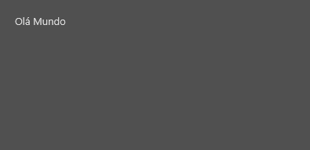
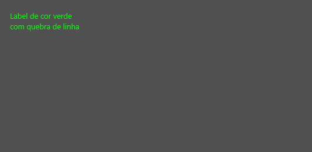
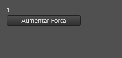
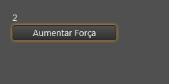
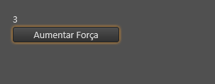

Tag label
Tag LABEL
A tag/componente label representa um texto não editável na interface. Excelente para mostrar informações.
Herança
O label possui todas as características de uma tag de texto. Veja:
Características
Além das características herdadas, a tag label também possui as seguintes características:
Propriedades e atributos
| Propriedade | Tipo | Valor Padrão | Descrição |
|---|---|---|---|
| autoSize | Boolean | false | Se for true, o label automaticamente ajusta seu tamanho (crescendo ou encolhendo) para melhor exibir o seu conteúdo. |
| field | String | \<string vazio> | Caminho de um campo no NodeDatabase. Quando associado, o label passa a apresentar o conteúdo do campo na interface. Veja também: Lua Form e NodeDatabase NodeDatabase |
| format | String | \<string vazio> | Define uma formatação automática para o texto do label. Esta propriedade aceita formatações estilo printf da linguagem C ou Format da linguagem Pascal. Exemplos: |
| --- | --- | ||
| %f | Número float/"com vírgula" | ||
| %3.3f | Número float apresentando 3 casas decimais | ||
| %s | Texto | ||
| %.2f kg | Número com duas casas decimais seguidas do texto "kg" | ||
| Carga em %1.1f %% | Apresenta um texto como: Carga em 25,3 % | ||
| Para documentação completa, favor procurar a documentação da função Format do Delphi. Observações: Se a propriedade formatFloat estiver preenchida, a propriedade format é ignorada. Apenas 1 parâmetro é suportado em format. | |||
| formatFloat | String | \<string vazio> | Define uma formatação automática para números no label. Esta permite um controle maior do que a propriedade format. Esta propriedade aceita formatações da função FormatFloat do Delphi. Exemplos: |
| --- | --- | ||
| ,0.00 | Número com 2 casas decimais e separador de milhares | ||
| 0.0# | Número com 1 ou 2 casas decimais, dependendo do valor. | ||
| 0.### litros | Número com 0 a 3 casas decimais, dependendo do valor e, no final, a palavra "litros" | ||
| 0.00### kg | Número com 2 a 5 casas decimais, dependendo do valor e, no final, a palavra "kg" | ||
| Total: ,0.00 | Palavra "Total: " seguida de número com 2 casas decimais e separador de milhares. | ||
| Receita de 0.00;Prejuízo de 0.00 | O caracter ; separa seções para valores positivos, negativos e zero. Se positivo ou maior que zero, usa a formatação "Receita de 0.00", se negativo, utiliza a formatacao "Prejuízo de 0.00" | ||
| +0.00;(0.00);vazio | O caracter ; separa seções para valores positivos, negativos e zero. Se positivo: +0.00 Se negativo: (0.00) Se zero: vazio | ||
| Para documentação completa, favor procurar a documentação da função FormatFloat do Delphi. Observações: Se a propriedade formatFloat estiver preenchida, a propriedade format é ignorada. |
Exemplos:
Exemplo 1 - Olá Mundo
| \<?xml version="1.0" encoding="UTF-8"?> \<form name="frmFichaTeste"> \<label left="20" top="20" text="Olá Mundo"/> \</form> |
|---|

Exemplo 2 - Cores
| \<?xml version="1.0" encoding="UTF-8"?> \<form name="frmFichaTeste"> \<label left="20" top="20" text="Label de cor verde com quebra de linha" fontColor="lime" autoSize="true"/> \</form> |
|---|

Veja também String de cores no Lua Form
Exemplo 3 - Usando Field para integrar com o NodeDatabase
| \<?xml version="1.0" encoding="UTF-8"?> \<form name="frmFichaTeste"> \<label left="20" top="20" field="campoForca" autoSize="true" wordWrap="false"/> \<button left="20" top="40" width="150" text="Aumentar Força" onClick="sheet.campoForca = (sheet.campoForca or 0) + 1;"/> \</form> |
|---|
Neste exemplo, um botão que incrementa o valor do field "campoForca" enquanto o label, conectado ao mesmo campo, exibe seus valores.
 ->  -> 
Veja também:
Created with the Personal Edition of HelpNDoc: Write eBooks for the Kindle